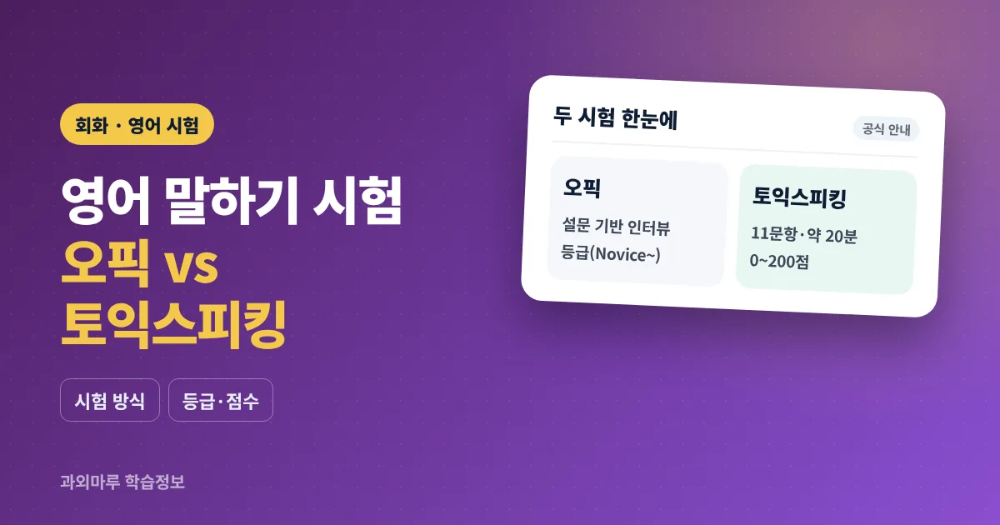

- 오픽은 배경 설문·자기평가로 주제와 난이도 범위가 정해지는 인터뷰형 시험
- 토익스피킹은 11문항·약 20분, 0~200점(10점 단위)으로 결과가 나오는 과제형 시험
- 두 시험 모두 외운 문장보다 즉석에서 이어 말하는 힘이 중요해 회화 연습과 함께 준비
영어 말하기 시험은 어떤 시험인가요?
영어 말하기 시험은 화면과 헤드셋으로 질문을 듣거나 읽은 뒤, 정해진 시간 안에 영어로 답한 녹음을 채점자가 평가하는 시험입니다. 국내에서 학생과 성인이 많이 보는 시험으로는 오픽(OPIc)과 토익스피킹(TOEIC Speaking)이 있습니다.
여기서 말하기 시험은 문법 지식을 객관식으로 묻는 시험이 아니라, 실제로 영어를 말하는 녹음 자료를 보고 수준을 판단하는 시험을 말합니다. 그래서 단어와 문법을 많이 알아도, 질문을 듣고 몇 초 안에 문장을 이어 말하는 연습이 되어 있지 않으면 실력만큼 결과가 나오지 않는 경우가 있습니다.
두 시험은 만든 기관과 평가 목적이 다릅니다. 오픽은 미국외국어교육협회(ACTFL)가 개발한 컴퓨터 기반 말하기 인터뷰로, ACTFL 말하기 능숙도 기준(Proficiency Guidelines)에 따라 등급을 매깁니다. 토익스피킹은 미국 ETS가 만든 시험으로, ETS는 일상생활과 직장에서 영어로 의사소통하는 능력을 측정하도록 설계했다고 안내합니다.
기초 회화부터 다시 다지고 싶다면 기초 영어회화 공부 순서를 먼저 보고, 말하기 시험은 그 연습을 점검하는 목표로 삼는 방법도 있습니다.
오픽과 토익스피킹은 무엇이 다른가요?
오픽은 응시자가 고른 생활 주제로 인터뷰하듯 이어 말하는 시험이고, 토익스피킹은 소리 내어 읽기·사진 묘사·의견 말하기처럼 정해진 유형을 순서대로 푸는 시험입니다. 결과도 오픽은 등급, 토익스피킹은 점수로 나옵니다.
| 구분 | 오픽(OPIc) | 토익스피킹 |
|---|---|---|
| 개발 기관 | ACTFL(미국외국어교육협회) | ETS |
| 시험 방식 | 아바타 면접관이 질문하는 컴퓨터 기반 인터뷰 | 유형별 과제 11문항을 순서대로 응답 |
| 시험 시간 | ACTFL 안내 기준 평균 20~40분 | 약 20분 |
| 질문 주제 | 배경 설문 응답(학교·집·여가·관심사 등)에 따라 문항 범위가 정해짐 | 모든 응시자가 같은 유형 구성(일상·업무 상황) |
| 난이도 | 자기평가 선택에 따라 시험 형식(Form 1~5)과 받을 수 있는 등급 범위가 정해짐 | 문항 유형과 시간이 고정 |
| 결과 | Novice·Intermediate·Advanced·Superior 등급(하위 Low·Mid·High) | 0~200점, 10점 단위 |
표는 ACTFL·LTI와 ETS의 공식 안내를 요약한 것입니다. 국내 시험의 응시료, 시험 일정, 국내 성적표 표기, 성적 유효기간은 각 시험의 국내 시행기관 공식 사이트에서 확인해 주세요.
어떤 시험이 맞을지 고르는 기준
- 결과를 제출할 곳 — 학교 활동, 대외 프로그램, 이후 지원할 곳이 특정 시험이나 점수·등급을 요구하는지 먼저 확인합니다.
- 말하기 스타일 — 자기 경험을 길게 이야기하는 데 익숙하면 오픽, 정해진 형식에 맞춰 짧고 정확하게 답하는 데 익숙하면 토익스피킹이 준비하기 편하다고 느끼는 경우가 많습니다.
- 준비할 수 있는 기간 — 토익스피킹은 유형이 고정되어 있어 유형별 연습 계획을 세우기 쉽고, 오픽은 설문 주제별 이야기 재료를 준비하는 시간이 필요합니다.
토익스피킹은 문항이 어떻게 구성되나요?
토익스피킹은 11문항을 약 20분 동안 푸는 시험이며, 문항마다 준비 시간과 응답 시간이 정해져 있습니다. ETS 안내에 따르면 시간이 남아도 다음 문항으로 먼저 넘어가거나 이전 문항으로 돌아갈 수 없습니다.
| 문항 | 유형 | 준비 시간 | 응답 시간 |
|---|---|---|---|
| 1~2 | 글 소리 내어 읽기 | 45초 | 45초 |
| 3~4 | 사진 묘사하기 | 45초 | 30초 |
| 5~7 | 질문에 답하기 | 문항당 3초 | 15초(5·6번), 30초(7번) |
| 8~10 | 주어진 정보를 보고 질문에 답하기 | 정보 읽기 45초, 문항당 3초 | 15초(8·9번), 30초(10번) |
| 11 | 의견 말하기 | 45초 | 60초 |
채점은 ETS 인증 채점자가 녹음을 듣고 합니다. 1~10번은 문항당 0~3점, 11번은 0~5점 척도로 평가하며, 소리 내어 읽기는 발음과 억양·강세를, 나머지 문항은 과제에 맞는 내용인지와 전달력, 어휘·문법 사용을 함께 봅니다. 최종 결과는 0~200점(10점 단위)으로 나옵니다.
ETS는 이 시험에 합격·불합격 기준이 따로 없고, 점수를 활용하는 기관이 각자 필요한 기준 점수를 정한다고 안내합니다. 따라서 '몇 점이 필요하다'는 기준은 제출할 곳의 모집 요강이나 안내를 직접 확인하는 것이 정확합니다.
오픽은 어떻게 진행되고 등급은 어떻게 나뉘나요?
오픽은 배경 설문과 자기평가를 먼저 한 뒤, 그 결과에 맞춰 나오는 질문에 인터뷰하듯 답하는 시험입니다. 결과는 ACTFL 기준의 등급으로 나오며, 자기평가로 정해진 시험 형식의 범위 안에서 등급이 매겨집니다.
- 배경 설문(Background Survey) — 학교, 집, 여가 활동, 관심사 등에 답하면 그 응답에 따라 질문 주제의 범위가 정해지고, 컴퓨터가 그 안에서 질문을 고릅니다.
- 자기평가(Self-Assessment) — 수준을 설명한 다섯 개 문장 가운데 자신과 가까운 것을 고르면, 그에 따라 Form 1~5 중 하나의 시험이 만들어집니다.
- 기기 점검과 샘플 문항 — 녹음 장치와 진행 방식을 미리 확인합니다.
- 인터뷰 — 아바타 면접관의 질문에 답합니다. ACTFL 안내에 따르면 한 주제에 2~3개 질문이 묶여 나오고, 시험 형식에 따라 여러 주제를 다룹니다.
LTI 안내에 따르면 선택한 시험 형식의 목표 범위보다 높거나 낮은 등급은 받을 수 없습니다. 그래서 자기평가를 지나치게 낮게 고르면 실제 실력보다 낮은 범위의 등급만 받을 수 있고, 너무 높게 고르면 어려운 질문이 많아질 수 있습니다.
ACTFL 등급별 말하기 특징
| 주 등급 | 공식 안내의 특징 (요약) | 말의 단위 |
|---|---|---|
| Novice | 외운 표현과 단어 나열로 최소한의 의사소통 | 단어·목록·구 |
| Intermediate | 배운 표현을 조합해 스스로 문장을 만들고, 간단한 질문을 주고받으며 대화를 이어 감 | 문장 |
| Advanced | 현재·과거·미래 시제로 이야기하고 묘사하며, 예상하지 못한 상황에도 대처 | 문단, 이어지는 말 |
| Superior | 추상적인 주제를 논의하고 의견을 근거로 뒷받침하며 가설을 세움 | 긴 담화 |
Novice·Intermediate·Advanced는 다시 Low·Mid·High로 나뉩니다. 국내 시험에서 실제로 받을 수 있는 등급 범위와 성적표 표기는 국내 시행기관 안내를 확인해 주세요.
영어 말하기 시험은 얼마나 준비해야 하나요?
준비 기간은 지금 말하기 수준과 목표 점수·등급에 따라 달라서 일률적으로 정할 수 없습니다. 먼저 공식 샘플 문항으로 한 번 녹음해 보고, 목표와의 차이를 확인한 뒤 기간을 잡는 것이 현실적입니다.
ETS와 ACTFL은 공식 사이트에 시험 안내서와 샘플 문항을 공개하고 있습니다. 샘플 문항에 실제 시간을 맞춰 답해 보고 녹음을 다시 들으면, 어느 부분에서 말이 끊기는지 스스로 확인할 수 있습니다.
시작 전 점검 체크리스트
- 제출처와 목표 — 어느 시험의 어떤 점수·등급이 필요한지, 언제까지 필요한지 적습니다.
- 첫 녹음 — 샘플 문항 2~3개를 실제 시간 안에 답하고 녹음합니다.
- 끊기는 지점 — 첫 문장을 못 꺼내는지, 두세 문장 뒤 할 말이 떨어지는지, 시제가 섞이는지 표시합니다.
- 시간 감각 — 15초·30초·60초 동안 실제로 몇 문장을 말하는지 세어 봅니다.
- 시험 일정 — 국내 시행기관 공식 사이트에서 가까운 시험일과 접수 마감, 결과 발표 시기를 확인합니다.
4주 준비 흐름 (예시)
| 주차 | 토익스피킹 (예시) | 오픽 (예시) |
|---|---|---|
| 1주 | 유형 익히기, 소리 내어 읽기·사진 묘사 연습 | 설문 주제 정하기, 자기소개와 주제별 기본 문장 만들기 |
| 2주 | 질문 답하기(5~7번) 15초·30초 답변 틀 연습 | 주제별 과거 경험 이야기하기(시제 연습) |
| 3주 | 정보 보고 답하기(8~10번), 의견 말하기(11번) | 묘사 → 경험 → 비교로 이어 말하기, 돌발 질문 대처 |
| 4주 | 전체 11문항 시간 맞춰 모의 응시 | 실제 시간에 맞춘 모의 인터뷰와 녹음 점검 |
표는 이해를 돕기 위한 예시이며, 학생의 수준과 남은 기간에 따라 순서와 길이를 조절하면 됩니다.
영어 스피킹 실력과 시험 준비는 어떻게 함께 키울까요?
말하기 시험은 결국 즉석에서 영어로 이어 말하는 힘을 보기 때문에, 답변을 통째로 외우기보다 자주 쓰는 문장 틀과 이야기 재료를 준비해 상황에 맞게 바꿔 말하는 연습이 효과적입니다. ACTFL도 오픽이 연습하지 않은 상황에서 언어를 쓰는 능력을 평가한다고 설명합니다.
수업에서 자주 보는 경우는 미리 써 둔 답변은 매끄럽게 말하지만, 질문이 조금만 바뀌어도 첫 문장부터 막히는 학생입니다. 이럴 때는 답변 전체가 아니라 '결론 한 문장 → 이유 → 예시 → 마무리'처럼 말의 순서를 익혀 두면, 처음 보는 질문에도 틀에 맞춰 내용을 채워 넣기 쉬워집니다.
- 문장 틀 익히기: 의견, 경험, 묘사, 비교에 자주 쓰는 표현을 주제마다 바꿔 넣어 말해 봅니다.
- 시제 점검: 경험을 말할 때 과거 시제를 유지하는지 녹음으로 확인합니다.
- 시간 연습: 타이머를 켜고 정해진 시간을 채우는 연습을 합니다. 너무 짧으면 예시를, 너무 길면 결론을 앞으로 옮깁니다.
- 피드백 받기: 녹음을 다시 듣거나 다른 사람에게 들려주고, 반복되는 실수 한두 가지만 골라 고칩니다.
학교 영어 수업의 말하기 수행평가도 주제에 맞춰 일정 시간 말하는 방식인 경우가 있어, 같은 연습이 도움이 될 수 있습니다. 다만 평가 방법과 기준은 학교마다 다르므로 학교 안내를 확인해 주세요. 학교 영어 공부는 영어 과외 안내에서, 회화 수업 방식은 회화 수업 안내 페이지에서 볼 수 있습니다. 1:1 수업에서는 일반적으로 학생이 실제 시간에 맞춰 답한 녹음을 함께 듣고, 끊기는 부분의 문장 틀을 고쳐 다시 말해 보는 방식으로 진행하는 경우가 많습니다.
자주 묻는 질문
오픽과 토익스피킹은 무엇이 다른가요?
오픽은 배경 설문으로 고른 생활 주제에 대해 인터뷰하듯 답하고 결과가 등급으로 나오는 시험입니다. 토익스피킹은 소리 내어 읽기, 사진 묘사, 의견 말하기 등 11문항을 약 20분 동안 풀고 0~200점으로 결과가 나옵니다.
영어 말하기 시험은 얼마나 준비해야 하나요?
지금 수준과 목표 점수·등급에 따라 달라서 정해진 기간은 없습니다. 공식 샘플 문항으로 먼저 녹음해 보고, 목표와의 차이를 확인한 뒤 준비 기간을 정하는 것이 좋습니다.
토익스피킹에 합격 점수가 있나요?
ETS는 토익스피킹에 합격·불합격 기준이 따로 없고, 점수를 활용하는 기관이 각자 기준 점수를 정한다고 안내합니다. 필요한 점수는 제출할 곳의 안내를 확인해 주세요.
오픽 자기평가는 어떻게 골라야 하나요?
자기평가 선택에 따라 시험 형식과 받을 수 있는 등급 범위가 정해집니다. 공식 안내의 수준 설명과 샘플 문항을 보고 지금 실력과 가장 가까운 단계를 고르는 것이 좋습니다.
영어 스피킹 시험 답변을 외워서 가도 되나요?
두 시험 모두 질문을 듣고 즉석에서 답하는 방식이라 외운 답변만으로는 바뀐 질문에 대응하기 어렵습니다. 자주 쓰는 문장 틀과 이야기 재료를 준비해 상황에 맞게 바꿔 말하는 연습이 더 도움이 됩니다.
참고 자료
- ETS, 「About the TOEIC Speaking and Writing Tests」 — https://www.ets.org/toeic/about/speaking-writing.html
- IIBC(일본 TOEIC 시행기관), 「TOEIC Speaking Test: Test Format」 — https://www.iibc-global.org/english/toeic/test/speaking/about/format.html
- ETS, 「TOEIC Speaking and Writing Tests Score User Guide」 — https://www.fr.ets.org/content/dam/ets-org/fr/pdfs/toeic/score-user-guide-speaking-writing.pdf
- ACTFL, 「ACTFL Oral Proficiency Interview - Computer Familiarization Guide」 — https://www.actfl.org/uploads/files/general/OPIc_Familiarization_Guide.pdf
- LTI(ACTFL 시험 운영 기관), 「What is the Oral Proficiency Interview-Computer? About OPIc」 — https://www.languagetesting.com/oral-proficiency-interview-by-computer-opic
이 글은 일반적인 참고 정보입니다. 시험 구성과 등급·점수 설명은 ETS·ACTFL·LTI 공식 안내를 요약한 것이며, 국내 시험의 응시료·일정·성적표 표기·성적 유효기간은 각 시험의 국내 시행기관 공식 사이트를 확인해 주세요. 제출처가 요구하는 점수·등급은 해당 기관 안내를 확인해 주세요. 표의 준비 흐름은 예시입니다.
학년과 영어 학습 경험, 준비 중인 시험과 목표 시기를 남겨주시면 상담 내용을 확인해 안내드립니다.